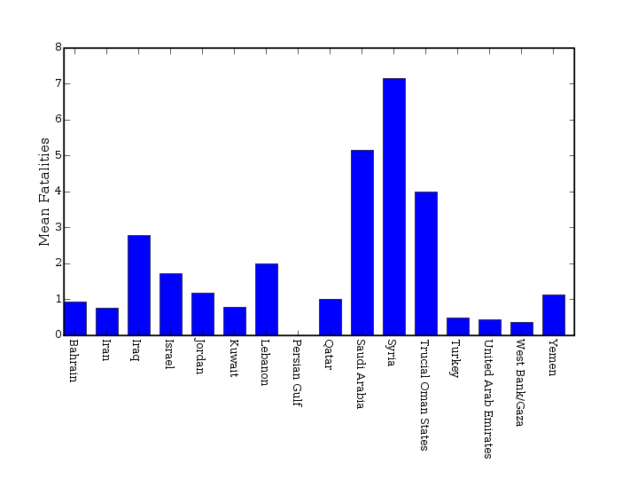
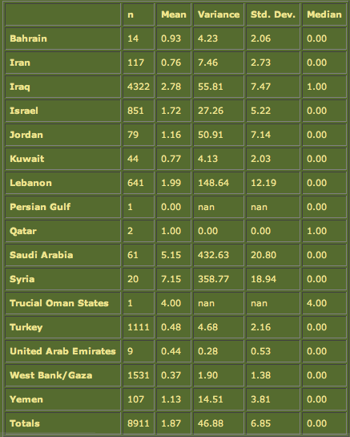
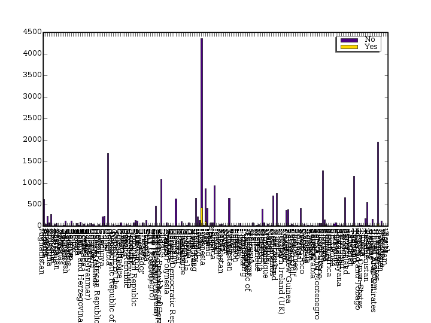
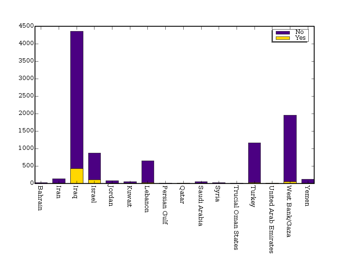
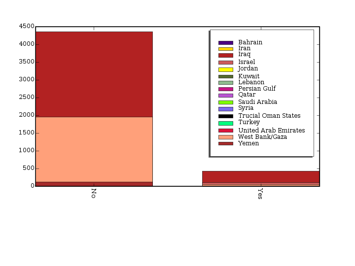

We have had a lot of great feedback from students on the Data Analysis Tool. Thanks for your input. There are a handful of changes in the works, which should be put in place by the middle of May 2007.
Unfortunately, it won't be possible to address all of your concerns by actually changing the application, so we would like to present some of the interesting problems here, and some possible solutions.
Confusion over the Meaning of Numbers
There were several questions regarding confusion over what some of the numbers in the system represent.
This is best illustrated by looking at the variable "Fatalities"... The fatalities number shown is the mean number of fatalities per incident. Here is a graph showing the mean number of fatalities per incident by Country in the Middle East...
The accompanying data table looks like this...
Note that the column "n" refers not to the number of fatalities, but to the number of incidents associated with that Country. The number of fatalities is not shown. The actual number of fatalities per country would be a factor of the number of incidents times the mean per incident.
Creating Readable Bar Graphs
There were several questions regarding the bar graphs, and the way that the "legend" can interfere with the viewing of the data.
It is true that some types of graphs can be unreadable due to crowding. It may be possible to fix this to a certain extent, and I will look into it, but in the meantime, here are some things to try:
Use the Conditions Builder to narrow the focus of the data being examined. For example, the following graph showing Suicide attacks by country is unreadable...
But, if you narrow the search by selecting "Region = 'Middle East'" in the Conditions Builder, you get this...
Also, note that if you were to reverse the order of the variables from Country on the left and Suicide on the right to Suicide on the left and Country on the right, then the "legend" would show the Country names, and "Yes" and "No" would be mapped on the horizontal of the graph. This is far less useful than the reverse. Better to put the variable with the fewer number of "categories" on the right.
You can see that, given more countries, the "legend" would interfere with the data and become unreadable.
So, please use the Conditions Builder to narrow your search when the graphs become unreadable, and please be aware that in cases where you are comparing two categorical variables, the order of the variables does make a difference in the graph.
Printing Data
Several suggestions were made about finding better ways to allow data to be recreated and printed for purposes of including in your papers.
These include: downloading the data set as an Excel file, downloading the data summary information as Excel file, and including better labeling, including conditions information in the graphs.
There are all excellent suggestions, and we will work on what we can. In the meantime, however, please use the following techniques...
Note that the table in the "Meaning of Numbers" section above was recreated here as a graphic by taking a "screenshot" of the table on the data analysis tool screen. Your computer should be equipped with the ability to take a screenshot. On a Mac, you use shift-command-3 (whole screen) or shift-command-4 (partial screen).
You could also use the copy-and-paste or screenshot techniques to capture conditions information. Just please make sure you remember which graphs and tables go with which conditions. Unfortunately, at this time, there is some burden on the user to keep track of this information.
Miscellaneous Other Questions and Answers